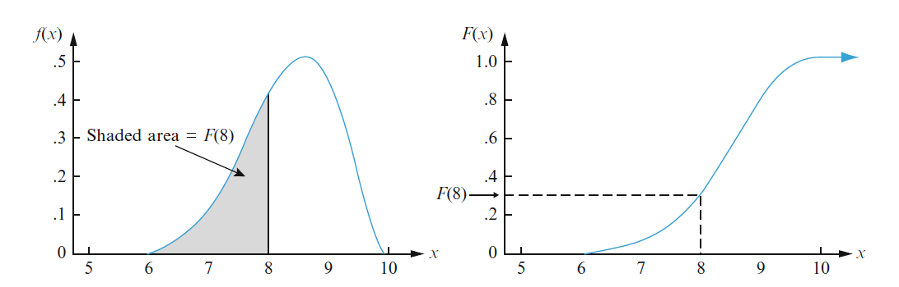
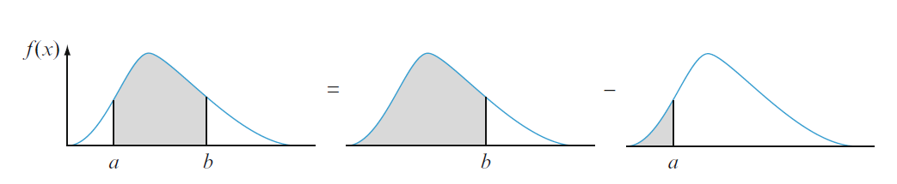
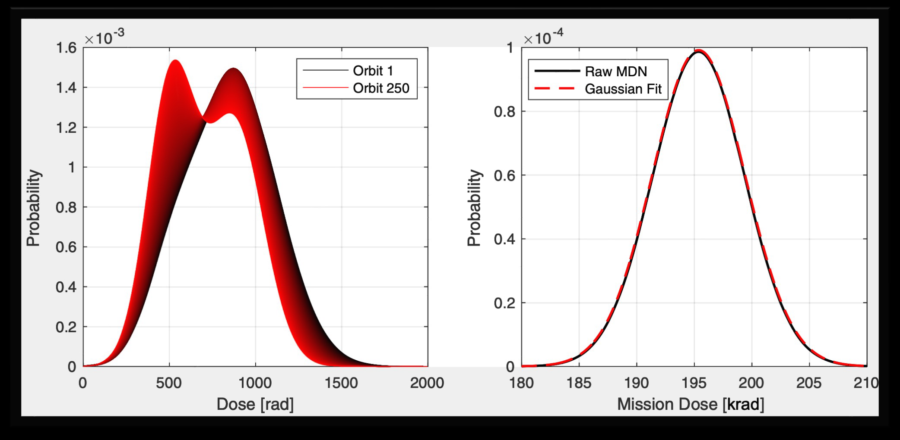
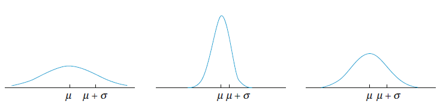
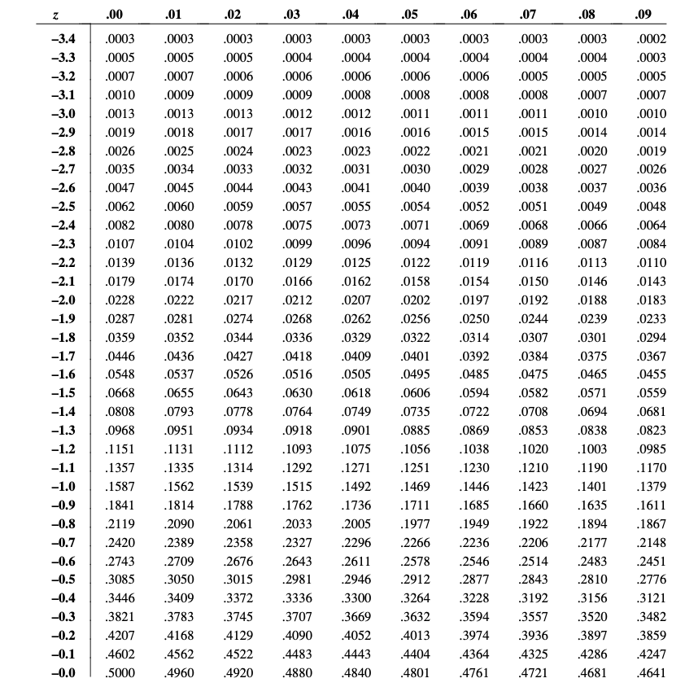
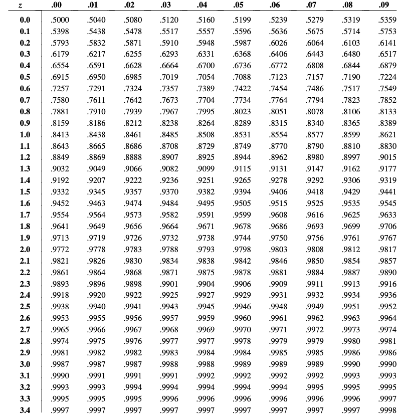
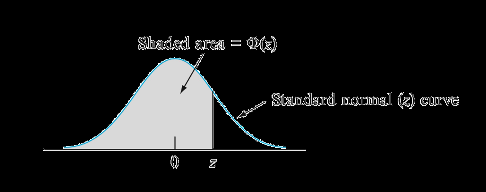
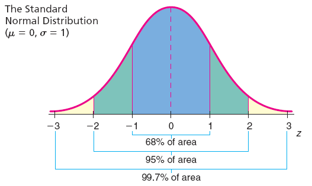
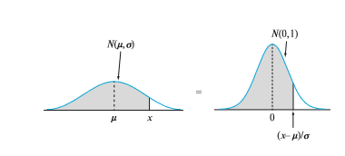

14 Continuous Random Variables and Distributions#
Continuous Random
Variables and Distributions
AAE35103
\n\n\n\n \n\n\n\n
\n\n\n\n \n\nFrom discrete to continuous random variables
2
From a discrete random variable…
Countable set of numbers (e.g., roll of a die)
… to a continuous random variable
Range over a continuous set of numbers
•
Many experiments lead to random variables with a range that is a
continuous variable (e.g., measuring voltage across a resistor)
•
Models using continuous random variables are finer-grained and possibly
more accurate than discrete random variables
•
Plus they allow use of powerful tools from calculus
•
And they admit insightful analysis that’s not possible with discrete models
All the concepts that we saw previously in the discrete case have
continuous analogs (e.g., expectation, pmf, cdf). These analogs
are the subject of this lecture
\n\n\n\n
\n\nFrom discrete to continuous random variables
2
From a discrete random variable…
Countable set of numbers (e.g., roll of a die)
… to a continuous random variable
Range over a continuous set of numbers
•
Many experiments lead to random variables with a range that is a
continuous variable (e.g., measuring voltage across a resistor)
•
Models using continuous random variables are finer-grained and possibly
more accurate than discrete random variables
•
Plus they allow use of powerful tools from calculus
•
And they admit insightful analysis that’s not possible with discrete models
All the concepts that we saw previously in the discrete case have
continuous analogs (e.g., expectation, pmf, cdf). These analogs
are the subject of this lecture
\n\n\n\n \n\n\n\n\n\nContinuous random variables
3
We assign a number between zero and ten to all events (elements) within the sample
space
How many individual outcomes do you have in a continuous interval?
Distinguishing feature of continuous random variables: the
probability of any individual outcome is zero! Why?
!
&
\n\n\n\n\n\nContinuous random variables
3
We assign a number between zero and ten to all events (elements) within the sample
space
How many individual outcomes do you have in a continuous interval?
Distinguishing feature of continuous random variables: the
probability of any individual outcome is zero! Why?
!
&
Infinite For example , take
=#
3
. 1415 …., randomize
each digit > You
will need
a infinite
number
of digits
correct
to getoo
= Probability
of
that
is zero
\n\n\n\n \n\n\n\n\n\nContinuous random variables
4
A random variable is called continuous if there is a nonnegative function fX, called the probability density
function of X, or pdf, such that:
Can be interpreted as the area
under the graph of the pdf
*This is a “traditional” integral (Riemann) and is assumed to exist and is well-defined for a class of (well-behaved) functions. For some unusual functions, a more subtle mathematical treatment
is required (theory of measure and Lebesgue integral). These functions are of no concern to us
*
P(x + B)
= (yfx(x)dx
For every subset
B of the real
one .
In particular ,
P(a =X = b) = (bfx(x)dx
AREA
under the
Fx(x)
Pa=x
= b)
curve between
&
and b
\n\n\n\n
\n\n\n\n\n\nContinuous random variables
4
A random variable is called continuous if there is a nonnegative function fX, called the probability density
function of X, or pdf, such that:
Can be interpreted as the area
under the graph of the pdf
*This is a “traditional” integral (Riemann) and is assumed to exist and is well-defined for a class of (well-behaved) functions. For some unusual functions, a more subtle mathematical treatment
is required (theory of measure and Lebesgue integral). These functions are of no concern to us
*
P(x + B)
= (yfx(x)dx
For every subset
B of the real
one .
In particular ,
P(a =X = b) = (bfx(x)dx
AREA
under the
Fx(x)
Pa=x
= b)
curve between
&
and b
\n\n\n\n \n\n\n\n\n\nContinuous random variables
5
For any single value, a:
P(x = a)
= (ax(x)
x
= a
Also , this
means
that
P(n =
X (> b)
= P(a(X(b)
= P(a
<x = b)
= P(a =
X
< b)
\n\n\n\n
\n\n\n\n\n\nContinuous random variables
5
For any single value, a:
P(x = a)
= (ax(x)
x
= a
Also , this
means
that
P(n =
X (> b)
= P(a(X(b)
= P(a
<x = b)
= P(a =
X
< b)
\n\n\n\n \n\n\n\n\n\nContinuous random variables
6
Note that fX is used to calculate probabilities, but it is not a probability
itself (only its integral over an interval is)
!
Properties of fX (or to qualify as a pdf, a function needs… ):
fx(x) >0
for all
X
(non negative
JEx(x)x
= 1
. 0
(Normalization Axiom)
·
\n\n\n\n
\n\n\n\n\n\nContinuous random variables
6
Note that fX is used to calculate probabilities, but it is not a probability
itself (only its integral over an interval is)
!
Properties of fX (or to qualify as a pdf, a function needs… ):
fx(x) >0
for all
X
(non negative
JEx(x)x
= 1
. 0
(Normalization Axiom)
·
\n\n\n\n \n\n\n\n\n\n\n\n\n\nContinuous random variables
7
Example: Is this a valid pdf?
fX (x) =
1
2 x
for 0 ≤x ≤1
0 otherwise
yet#
\n\n\n\n\n\n\n\n\n\nContinuous random variables
7
Example: Is this a valid pdf?
fX (x) =
1
2 x
for 0 ≤x ≤1
0 otherwise
yet#
By
Inspection
,
we
see that
1 a
For
0
<
X >1
2
=>
fx (x) > 0 , Xt 10
, 1)
&
2nd
_ /xdx
= VALID
P.D. F .
\n\n\n\n \n\nExpected value of a continuous random variable
8
Similar to the discrete case: pmf is replaced
by the pdf, and the summation replaced by
the integral
Discrete case
Can be interpreted as the anticipated average value of X in a large
number of independent repetitions of the experiment, or the “center
of gravity” of fX
*
\n\nExpected value of a continuous random variable
8
Similar to the discrete case: pmf is replaced
by the pdf, and the summation replaced by
the integral
Discrete case
Can be interpreted as the anticipated average value of X in a large
number of independent repetitions of the experiment, or the “center
of gravity” of fX
*
Some mathematical subtleties involved to avoid that the integral be infinite or undefined; the expected value is well-defined if
x −∞ +∞∫ ⋅fX (x)⋅dx < ∞ Think of it as a “typical value of X” E(x) = (* X Fx(x)dx #(x) = [KP, (x) Al K \n\n\n\n\n\nExpected value of a continuous random variable 9 Any real valued function of a random variable is also a random variable: Y = g(X) And the expected value of Y: E X −µ [ ] = 0 E aX + b [ ] = aE X [ ] + b Prove the following: Elg(x)] = [ g(xEx(x)dx (LEAVE THIS AS a , b AN Exercise) const. \n\n\n\n\n\nVariance of a continuous random variable 10 The variance, as in the discrete case, is defined as the expected value of the random variable (X - E[X])2 What is this? Intuitive interpretation? Why is it relevant? Show that: If IE(X) is a typical value of X ; variance is a measure of the dispersion of X around E[X] Tells us how typical E(X) and values “close to #(x) are Y G is aug . distance From aug . X” Wan[x] = E[(X-E[X])<J = /X-Ex Exxtd O < An[X] = E[X]
(E[X]) ? \n\n\n\n\n\nContinuous random variables 11 fX (x) = 3x 2 2 −1≤x ≤1 0 otherwise
Is this a “legitimate” pdf? 2. Sketch fX 3. Calculate E[X] 4. Calculate E[X2] 5. Calculate the variance and standard deviation of fX 1 We see that fx(x = 0 v and (8Fx(xdx= dx =x =o => VALID PDF #x(X)#
OfThis 2) i I “ ~ . AVG . VALUE I CURVE is
1 I X \n\n\n\n
 \n\n12
\n\n12
E[X] = (*xExdx=dxd 4.[x] : [xxdx … 5 . VAR [x] = E[x]-(E(x1)” = 2
x = 5 Sx = Nan] = s \n\nUniform random variables 13 Calculate the mean and variance of a uniform random variable over an interval [a; b] fX (x) = 1 b −a for x ∈[a; b] 0 elsewhere fX x b a 1/(b-a) /constant in (a . b) L 11111 AuA (b -a) = 1 . (b -a) EK1 =[xdx E(X) = (xdx …… WAR(x) = E(x2)
II(x))”= \n\n\n\n
 \n\n14
Exponential random variables: definition
Definition: An exponential random variable X has the following pdf
x
fX
How does this graph change as lambda decreases?
What does that mean in practice?
E(x)
=(Xe
-xx
, X z0
I
ELSEWHERE
E(x)
= (Xxe
\n\n14
Exponential random variables: definition
Definition: An exponential random variable X has the following pdf
x
fX
How does this graph change as lambda decreases?
What does that mean in practice?
E(x)
=(Xe
-xx
, X z0
I
ELSEWHERE
E(x)
= (Xxe
dx = (-x -**))% ↓#
is the rate at which events occurr O d = 2
(e
** xx = 1 I d = 1 .0 X
(x4) =01dx=…#
X ↓= 0 . S YAR(X) = E(x))
(E(x()” = 1/x2 · (x) = My =x HIGHER J =S EVENTS GUSTERED AROUND X = 0 \n\n\n\n\n\n15 Exponential random variables: proposition Let X be an exponential variable with parameter I . Them , the edf of X is F(x : X) = 0 X O E 1
⑪ -XX , XXO \n\n16 Exponential random variables: applications Suppose the wait time X for service at the post office has an exponential distribution with mean 3 minutes. If you enter the post office immediately behind another customer, what is the probability you wait over 5 minutes? Sketch the pdf and color in the area that you need to find Exn P(x(5)
= Wait time for service#
~ exponential distribution V min #(X)#
3 min = 1 X = 1 X 3 min P (X >5 min) = ? S#
1 - P(X(5)#
1 - F(5 , 1/3)
1/3 . 5) = 1
11#
e#
0 . 18 . 9 \n\n17 Exponential random variables: applications Under the same conditions, what is the probability of waiting between 2 and 4 minutes? FX P(2 < X(h) = =(4 ; 13)
F(2 ; 1/3) = (1
y4(3)
(1
e -2(3) IFin X(min
2/3
4/3 = e
c = 201 \n\n18 Exponential random variables: the memoryless property • If X ~ exponential(l) represents a waiting time, the probability of waiting a given length of time is not affected by how long you have already waited: • If you have already waited a minutes, the probability you wait b more minutes is the same as your initial probability of waiting b minutes • => Memoryless property P(X)a + b(x
a) = P(X) -u
Probability that Given We Some as we are We will wait longer have already#
starting From wait time thom a + b Zero a \n\n19 Exponential random variables: the memoryless property • Does this seem reasonable in practice? Can you give examples? • What other distribution did we learn about that was also memoryless? IT DEPENDS May make sense for the I A mechanical part failure may time between airplanes arriving not setisfy this property , since at an airport (diff . aircraft) time between failures may depend I on the operating time. Binomial discrete distribution Uniform Distribution Fl a bp() + 0 = Mony Bernoulli exp . w/ prob . 1
Pl) = & p and didn’t depend on prior A Bab Success. I 113 X depend on where you are MEMORY LESS does not satisfy this property \n\n20 Cdf of continuous random variable cdf, F(#), for a continuous rv X is defined for every # by For each #, F(#) is the area under the density curve to the left of # pdf cdf F(x) = P(X(x) = [F(y)dy DENSITY /WRYE edf represents the I NOT A probability of P(X(X) ↑ROBABILITY) XX &* Area
D under the
D D curre => F(X) \n\n\n\n\n\n\n\n

\n\n21 pdf and cdf of a continuous random variable For a continuous random variable, its cdf is continuous (i.e., it has no jumps). The second equation is valid for those x for which the cdf has a derivative pdf to cdf cdf to pdf Ex(x) = P(X =X) = ) x (u)du E(x) =x ~ DischENE
\n\n\n\n\n\n22 Using cdf to calculate probabilities Let X be a continuous rv with pdf f(x) and cdf F(x). Then for any number a, and for any two numbers a and b with a < b, P(X > a)#
1#
F(a) P(a = X(b)#
f(b)
F(a) \n\n\n\n\n\n\n\n\n\n\n\n

\n\n23 Example Suppose the pdf of the magnitude X of a dynamic load on a bridge (in Newtons) is given by a. Find the cdf: f(x) = ( + X , 0 + x+ ① , OTHERWISE F(x) =[Fly)dy = (*
zy)dy = + f(x) = (8
30 xxz 1 , X)2 \n\n24 b. Find the probability that the load is between 1 and 1.5 N: c. Find the probability that the load exceeds 1 N: P(1 = x = 1 .5) = F(1 . 5)
F(1) = [t(1 . 5)
331 .53] -[() +( = 19/64 = 0 . 297 P(X(1) = 1
P(X(1) = 1
F(1) = 1- [t(1) + 2 (1 = 0 . 688 \n\n25 Gaussian or normal random variables Bell-shaped curves appear very frequently in many applications of probability*, e.g., often used in signal processing Their probability models are members of the family of Gaussian random variables Because they appear so frequently, Gaussian random variables are also referred to as normal random variables (or normally distributed random variables)
Why so many? The central limit theorem explains why many phenomena produce data that can modeled as Gaussian random variables \n\n\n\n

\n\n26 Gaussian or normal random variables X is a Gaussian random variable if the pdf of X is: -0.1 0 0.1 0.2 0.3 0.4 0.5 0.6 0.7 0.8 0.9 -2 -1 0 1 2 3 4 5 6 7 Area under the (pdf) curve:
(X -u)) (x(x) = E 1 2 T ② 262 i I = mean E R I,
= standard -R
@ deviation X- N(u , 6) 9((x)dx = 1 .0
\n\n\n\n\n\n27 Gaussian or normal random variables 6 SMALIEn CENTER of 8 = LARGETHE crvE it CONTROL The SHAPE Of A NORMAL CURVE => the width and the location of the real line and the weight of the peak. \n\n\n\n

\n\n28 Gaussian or normal random variablesThe center of the bell is
The height of the peak is given by:
σ reflects the width of the bell: fX (x) = 1 σ 2π e −x−µ ( ) 2 2σ 2 The mean and variance of a Gaussian random variable with pdf given by the above equation are: X = M E(X) =M i WAR(X) = 0 2 6 -> small reflects in narrow bell , high peak 6 -> large reflects in a wide bell , flat peal \n\n\n\n\n\n\n\n\n\n29 How do we compute !(# ≤% ≤&) when %~) *, , ? FX (x) = P X ≤x ( ) = fX (u)⋅du −∞ x ∫ pdf to cdf fX (x) = 1 σ 2π e −x−µ ( ) 2 2σ 2 No closed form expression of FX(x) for a normal random variable. What can we do?
introduce the standard normal random variable, 2) use table (computer…) & ‘ ≤) ≤* = ,! * −,! ‘ = . “
#
1 0 22 3\( %\)& ! ‘(^’ 4# Can we integrate that? (pdf) YES , NUMERICALLY \n\n30 We define a “standard” normal random variable to be a normal variable with μ = 0 and σ = 1 Let’s denote the standard normal random variable by Z …and we tabulate Φ(z) Its cdf is given by Φ(z): Standard normal random variable
(x-
z (x) = “ 20 = Ez(z) = 1ez 2 Particular value
P(z) = P(z = z)#
↳ du ↑ 2π RANDOM VARIABLE \n\n\n\n\n\n31 Table A.3 Standard normal cdf \n\n\n\n

\n\n\n\n
\n\n32 pdf and cdf of the standard normal variable 0 0.2 0.4 0.6 0.8 1 1.2 -5 -4 -3 -2 -1 0 1 2 3 4 5 PDF CDF fZ (z) = 1 2π e−z 2 Φ z( ) = P Z ≤z ( ) = 1 2π e−u2 −∞ z ∫ du 10 —–F (z)#1 a zx+x ↓ PDF G = 1 .0 M = 0 \n\n\n\n

\n\n33 Standard normal random variable Design for six sigma: A business and design process methodology adopted in various industries for product design and improvement n = = = 26 h +36 E \n\n\n\n
\n\n34 Let’s look at a few examples P(z = 1 . 25) =(1 , 25) = 0 . 8944 (T . A . 3) T 11 .25)
P(z) 1 , 28)#
1
p(z 1 . 25) ~ = 1 -0 . 8944 = 0 . 1056 ↓ 1 .26
P) - 38 1 z 1 . 26) = P(z = 1 . 25)
p(zX
0 . 38) = (1 . 25)
#1-0 . 38) = 0 . 8944
0 . 3520 = 0 . 5454 (T . A . 3) \n\n35 Linear Transformations fX (x) = 1 σ 2π e −x−µ ( ) 2 2σ 2 Normality is preserved by linear transformation If X is a normal random variable, then: Y = aX + b (a≠0) is also normal, and its mean and variance are: E(x) = aE(X)
b NAR(x) = aWAR(X) \n\n36 Non-standardized normal distributions What if the mean is non-zero and standard deviation not 1? Can we linearly transform our variable to standardize it? MEAN of X M + 0 , 6 1 .0
Center Around M AND#
SEALED with 8 Our Continuous z = X
M NON STANDARD RV E w/X ~N (M , 6)
Z has the standard normal distribution
standard deviation with M = 0 and 6=1 .0 of X \n\n\n\n

\n\n37 Standardizing example Normal distribution Standardized normal distribution 10 s = 1 Z s = 50 µ = 51.2 X Z 0 Z µ = 0.12 Given is X ~ N(50,10). What is P(X ≤ 51.2)? STA3 z = xM = 51 . 2
50 = 0 .x)4(z
. 12) = (0 .12)#
0 .5478 E 10 = P(X(51 . 2) \n\n38 Standardizing example Normal distribution Standardized normal distribution 10 s = 1 Z s = 50 µ = 52.1 X Z 0 Z µ = 0.21 47.9 0.21#
0.0832 0.0832 What is P(47.9 ≤ X ≤ 52.1)? z = X -M#
&#
0.21 Z= M & z =
0 . 21 P( - 0 ,211 x < 0 ,(1) = #10,2) - 1 - 0 ,21) = 0 .5832 -04168 (TA3) = 0.1654 = P(47 .9 XX52.1) \n\n0.6217 Finding Z values for known probabilities 0
1 Z Z µ s = = 0 Z=0.31 What is Z given probability of 0.6217? 39 ↑(z) = 10 . 6277 => T . A . 3 z = 0, 31 \n\nWhat is Z given probability of 0.6217? Normal distribution Standardized normal distribution 10 s = 1 Z s = 50 µ = ? X Z 0 Z µ = 0.30 0.6179 0.3821 Recovering X values for known probabilities 40 #(z) = 0 . 6179 z = 0 .30 (T. A .3) zX = M + Sz = 50
3 .10 \n\nReading 41 Chapter 3.1 to 3.4 and 3.8 of Carlton and Devore, Probability with Applications in Engineering, Science, and Technology, 2nd ed., 2017 \n\n